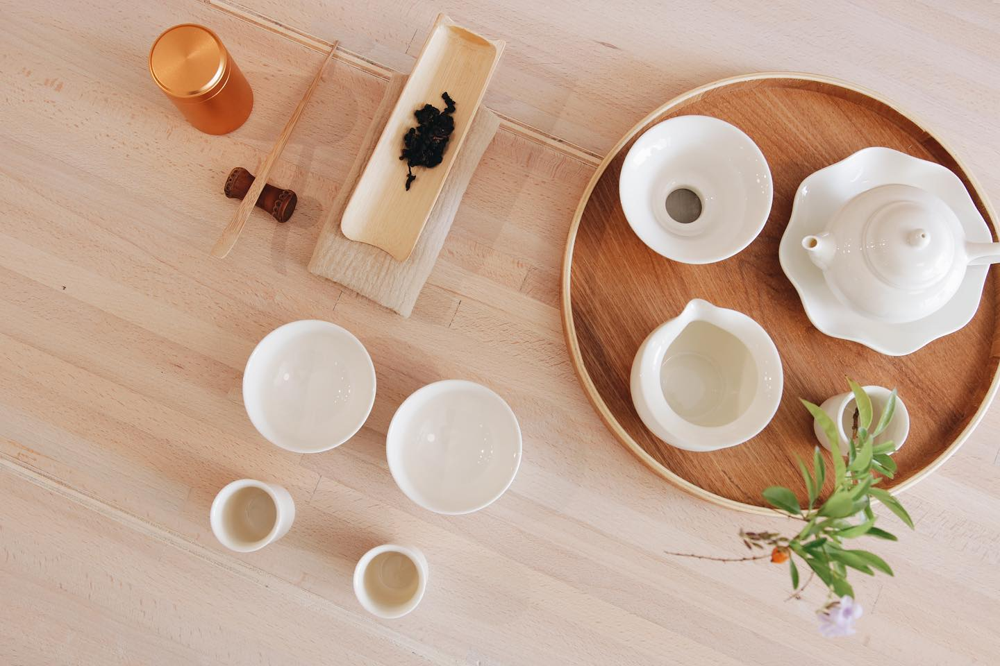
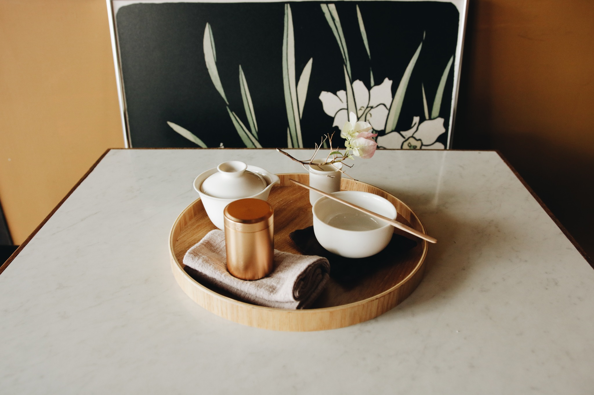

-
景點簡介
抱一茶屋是高雄市立美術館，策劃多年的延伸藝文生活空間，為高雄市立美術館的訪客、密鄰提供一處有其自明、特立，卻又不喧賓奪主的舒適交誼空間。
料理上延續了這樣的心念，提供屬於臺灣的、家常的茶品與料理。抱一的料理團隊把傳統手藝，注入到當代日常的飮食文化之中，透過細微的藝術轉化、臺灣本土食材的結合，呈現出臺灣料理的套餐；位上的美食文化，更符合後疫情時代的飲食需求。
抱一團隊伴隨高雄市立美術館之「美術館作為城市美好生活存在」的理念而成長，更將配合高雄市立美術館引領全球藝文生活飛快的轉變。
「抱一茶屋」期許自己，是高雄市立美術館園區美麗的存在，更是表彰高雄人的待客之【道】。
-

營業資訊
■週一固定公休(如遇特殊假日將另外公告)
■週二至週五及週日
午餐時段11:00~14:00
午茶時段14:00~17:00（不供應正餐）
晚餐時段17:00~20:00（供餐時間至19:00止）
■週六晚餐時段延長至晚間21:00 （供餐時間至20:00止）
■ 臉書粉絲團：https://www.facebook.com/TearoomBowie
■ 線上訂位系統：https://reurl.cc/6yj2Md
■ 訂位專線：07-5522371
-

交通建議
抱一茶屋位在高美館靠美術東二路的那側，
開車前來建議車子停靠美術東二路停車場。